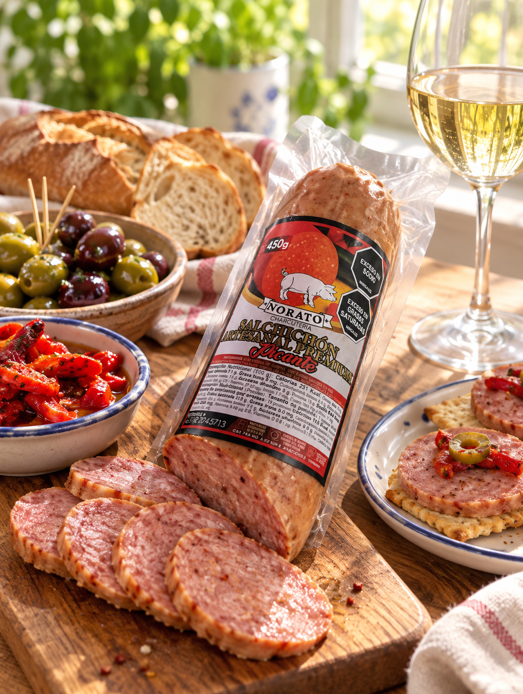
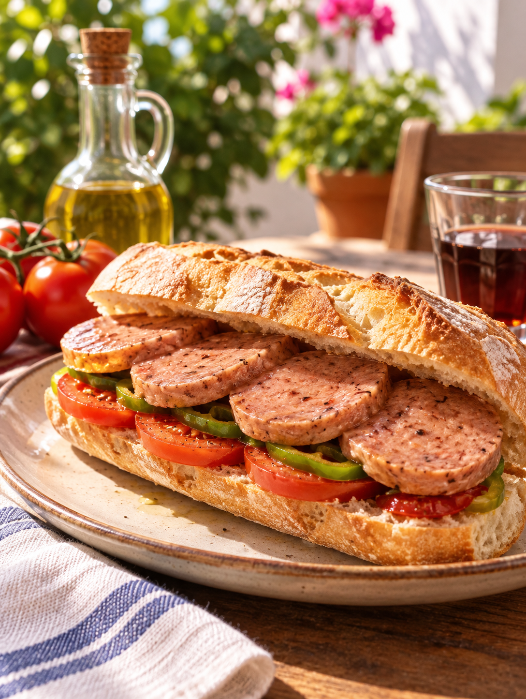
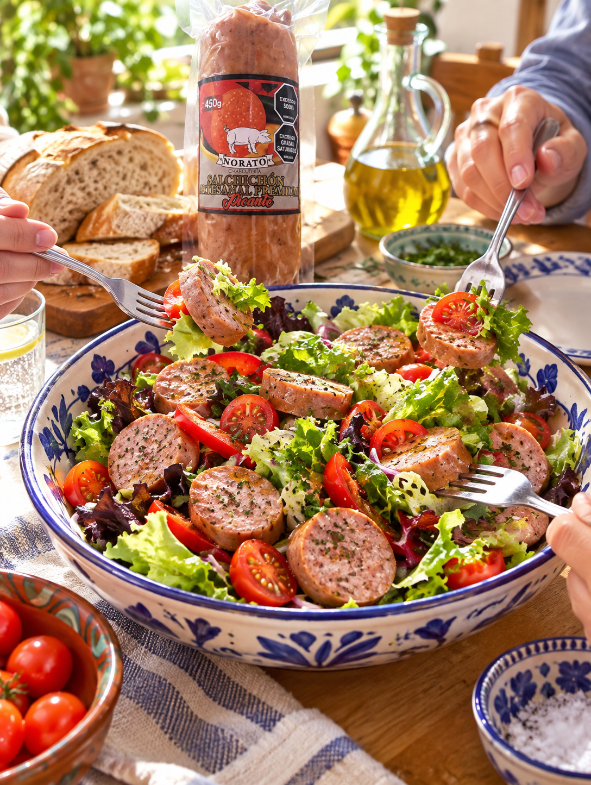

01

☀ Charcutería Norato
La mesa empieza aquí.
Nuestro salchichón artesanal sobre pan, en ensalada o en la tabla del mediodía. Hecho en lotes pequeños, para compartirse sin prisa.
Descubrir los sabores ↓¡huele a casa! →
✿ Qué cocinar con Norato
Platos deliciosos
todas las ideas, sin recetar —

el clásico
fresca ✺
 de la mesa larga
de la mesa larga
Primero
La carne que elige la casa
Empieza en lo que se sabe: piezas elegidas, sazón propia y fuego de leña. Lo que se afirma y lo que falta por confirmar se cuenta igual de claro.
Conocer las variedades ↓
✺ Esto no se come en serio
Para reírse con pan.
— porque el salchichón bueno se cuenta con la boca llena.
☀ Tres expresiones
Elige tu lado.
02
03
Cervecero ahumado
El plan de la tarde, con calor, humo y su burbuja favorita.
Ámbar · ahumado
Descubrir Cervecero ↗